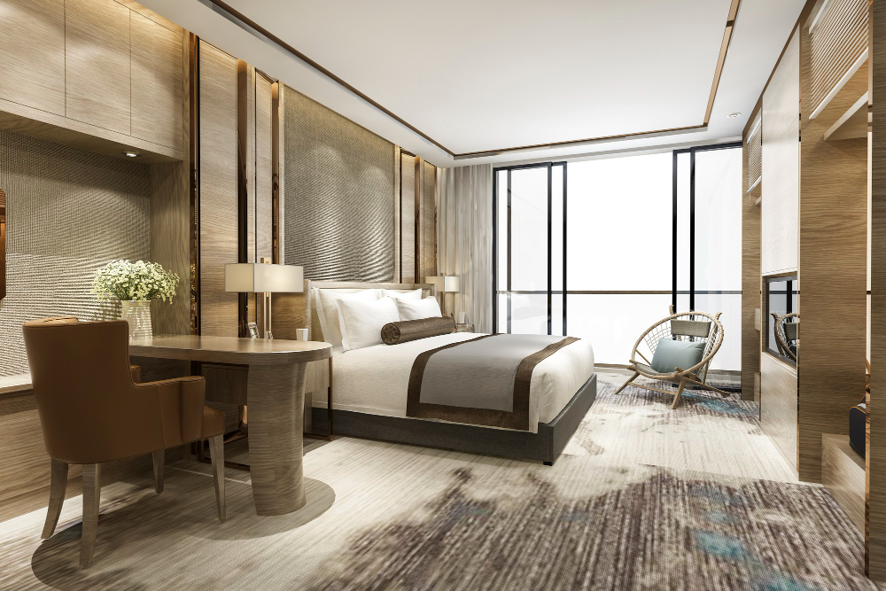

Hotel Maravilha Fortaleza
Localizado no coração de Fortaleza, este hotel oferece vistas espetaculares do mar e acomodações de luxo.
- Localização: Fortaleza
- Categoria: 5 estrelas
- Facilidades: Piscina, Spa, Wi-Fi gratuito, Restaurante gourmet
- Preço médio por noite: R$500
- Avaliação: 9.5
Endereço: Av. Beira Mar, 2500 - Meireles, Fortaleza - CE, 60165-121 
Mais informações e reservas
Resort Sol Nascente - Jericoacoara
Conhecido por sua incrível piscina de borda infinita e acesso direto à praia de Jeri.
- Localização: Jericoacoara
- Categoria: Resort 5 estrelas
- Facilidades: Piscina de borda infinita, Aulas de surf, Jantares na praia
- Preço médio por noite: R$700
- Avaliação: 9.2
Endereço: R. das Dunas, 30 - Jericoacoara, Jijoca de Jericoacoara - CE, 62598-973

Mais informações e reservas
Pousada Tranquilidade - Canoa Quebrada
Uma opção mais íntima para quem busca sossego em meio às dunas.
- Localização: Canoa Quebrada
- Categoria: Pousada 4 estrelas
- Facilidades: Café da manhã incluso, Passeios de bugue, Ambiente pet-friendly
- Preço médio por noite: R$300
- Avaliação: 8.9
Endereço: R. Quatro Ventos, 100 - Canoa Quebrada, Aracati - CE, 62800-000

Mais informações e reservas